Let’s scan with nmap.
PORT STATE SERVICE VERSION
22/tcp open ssh OpenSSH 8.9p1 Ubuntu 3ubuntu0.10 (Ubuntu Linux; protocol 2.0)
80/tcp open http nginx 1.18.0 (Ubuntu)
3000/tcp open ppp?
Modify the /etc/hosts file by adding 10.10.11.25 greenhorn.htb so the browser can skip the DNS resoltion. Now we can access the domain.
As we can see, there is an http service running at port 80 and an undefined service running at port 3000. Let’s start with the http server.
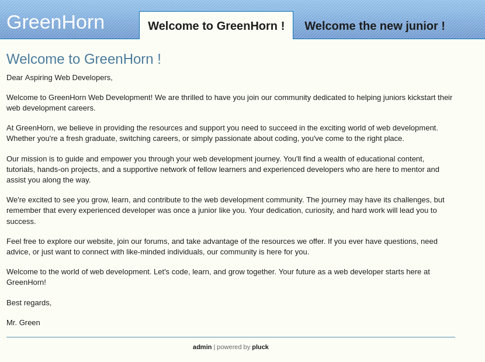
Proceed to enumerate web directories with ffuf. By executing ffuf -u http://greenhorn:80/FUZZ -w <wordlist> we get a lot of responses with status code 302 (redirected), so let’s add -r to follow redirects. Then the most responses have length 2245. It seems that if the directory doesn’t exist, we get redirected to the home page, so add -fs 2245 to filter those.
# Enumerate directories
# use -r flag to follow redirects
# use -fs 2245 to filter responses with length 2245
ffuf -u http://greenhorn:80/FUZZ -w /usr/share/wordlists/dirb/common.txt -r -fs 2445
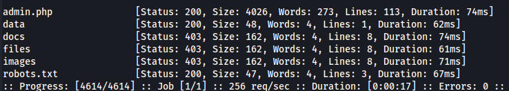
We got an admin.php page that redirects us to login.php, but we do not have the password yet.
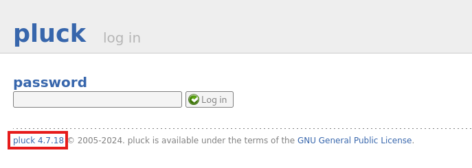
The applcation running is Pluck, a small and simple content management system, written in php. By searching pluck 4.7.18 exploit site:github.com we get CVE-2023-50564 (PoC). Unfortunately, the exploit requires login credentials to work.
Let’s try the service at port 3000.
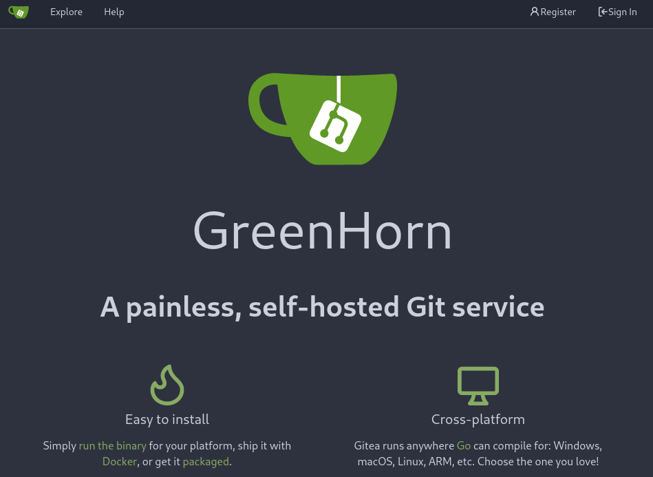
ffuf -u http://greenhorn:3000/FUZZ -w /usr/share/wordlists/dirb/common.txt -r
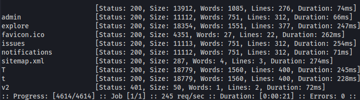
By checking sitemap.xml, we found http://greenhorn.htb:3000/explore/repos/sitemap-1.xml.
http://greenhorn.htb:3000/sitemap.xml:
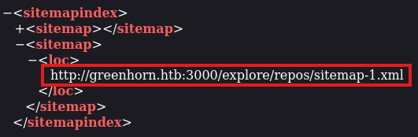
http://greenhorn.htb:3000/explore/repos/sitemap-1.xml:
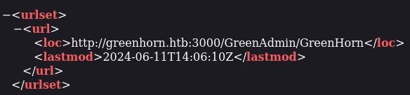
Let’s check this repository GreenAdmin/GreenHorn
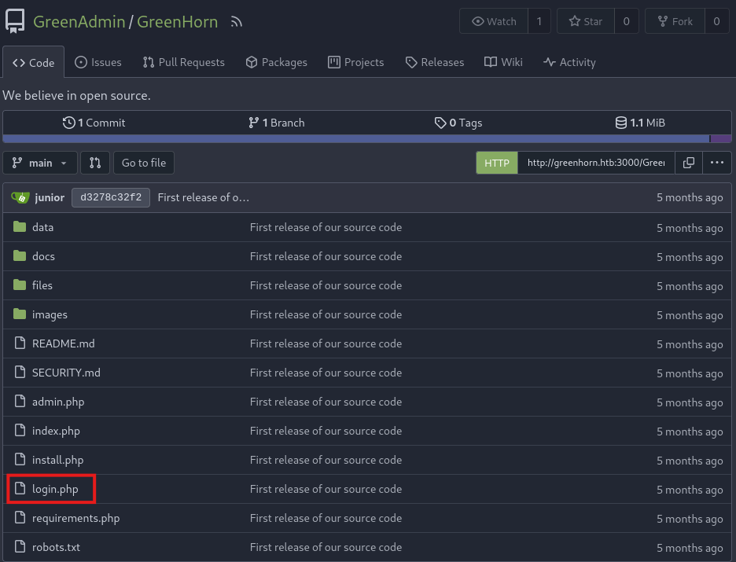 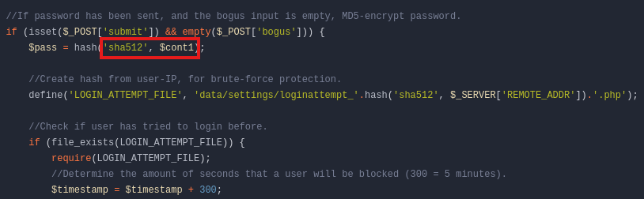
As we can see the password check for the login is done by a hash function that is taking as parameters the type of encryption, sha512 and the varible, $cont1.
By searching the repository files we can also find the password hash at data/settings/pass.php file.
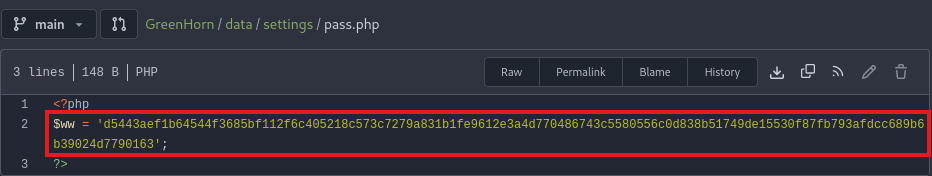
We know the hash and the encryption method, so we can decrypt it now.
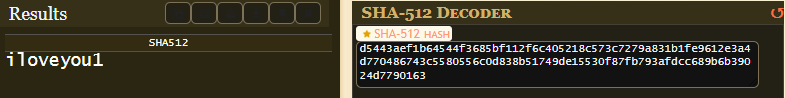
Use this password at http://greenhorn:80/login.php.
Great it works, so now we can use the exploit we found before.
By following the README instructions, we created the payload.zip file with the payload.
nc -lnvp 6464 # Start a listener
python3 ./exploit.py # Run the script and enter the .zip file path when prompted
Nice, we got the reverse shell. But still, we are www-data user and the shell is unstable. We need escalate our previleges to a user and then to root.
export TERM=xterm # can use commands like clear now
python3 -c 'import pty;pty.spawn("/bin/bash")' # to spawn a bash shell
Let’s by checking the users with cat /etc/passwd | grep home. We got a user named junior. Maybe the password works for him too, su junior. We got a foothold!
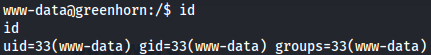
Now let’s go for the root. Checking basic things like sudo -l, crontab etc didn’t lead anywhere, so let’s transfer /home/junior/Using OpenVAS.pdf file to our machine in order to inpect it.
By opening it with a Pdf Reader we can see a message by Mr. Green. 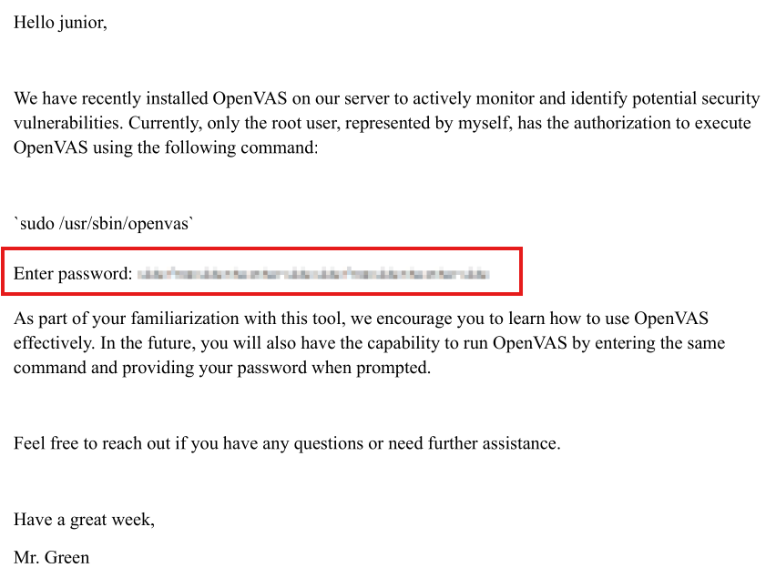
One way to find out the password is to use a tool called Depix. To use this tool we need to give as a parameter the target .png and a search image. Unfortunately, if we take a screenshot of the pixelized password, the tool isn’t working as expected.
Notice that there is another tool, tool_show_boxed, that we can use to check if the our image is valid.
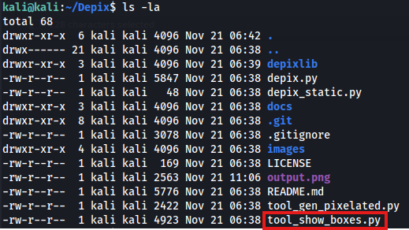
Since taking a screenshot isn’t working let’s use an internet tool to extract images from pdf.
# Check if the image is valid
python3 ./tool_show_boxes.py -p extracted_image.png -s images/searchimages/debruinseq_notepad_Windows10_closeAndSpaced.png
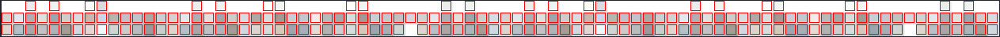
# Depixelize the image
python3 ./depix.py -p extracted_image.png -s images/searchimages/debruinseq_notepad_Windows10_closeAndSpaced.png
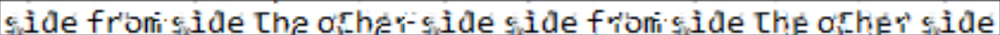
Now su root, type the password and … we are root.